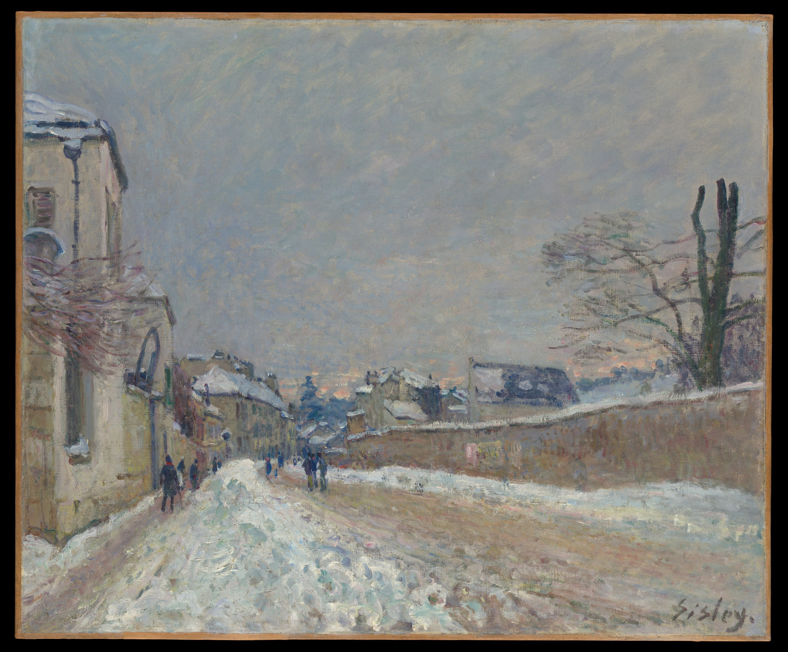

Альфред Сислей
Rue Eugène Moussoir à Moret: L'hiver (Улица Эжена Муссуара в Море: Зима), 1891

Холст Масло 46,7 x 56,5 см
Метрополитен-музей, Нью-Йорк
Вскоре после того, как в 1867 году Курбе выставил серию снежных пейзажей, несколько молодых художников, в том числе Моне, Ренуар и Сислей, исследовали возможности пейзажей, выполненных в белых или серых тонах с несколькими яркими штрихами. Сислей, как и Моне, продолжал рисовать снежные пейзажи до конца своей жизни. Эта работа, с её тонкой палитрой и мастерски выполненными мазками, является одной из нескольких, созданных Сислеем зимой 1891 года в Море, к югу от Парижа. На ней изображена улица Эжена Муссуара, граничащая со стеной деревенской больницы, всего в нескольких минутах от дома Сислея.
Происхождение
- 1) Завещание Ральфа Фридмана, 1992 год.
Источник: https://www.metmuseum.org/art/collection/search/437686